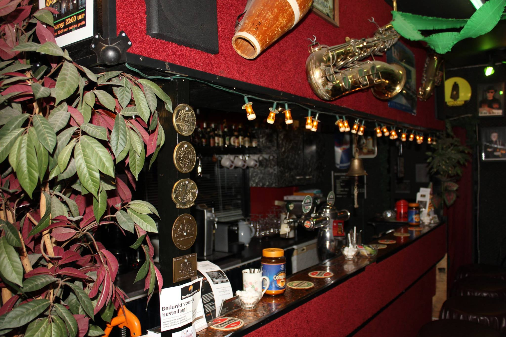
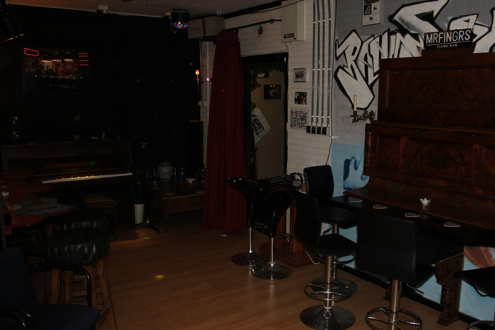
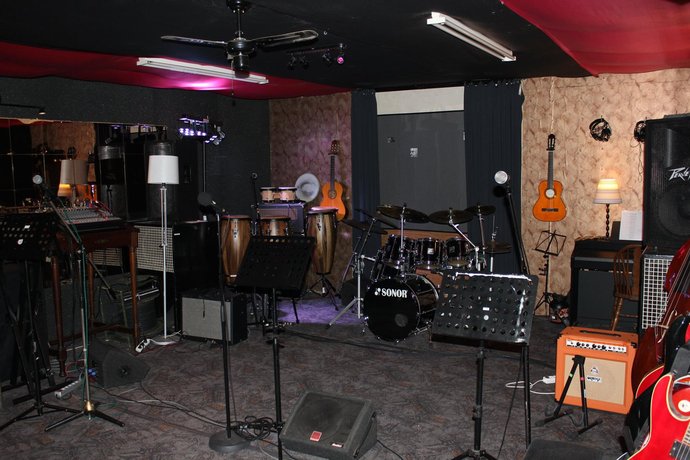
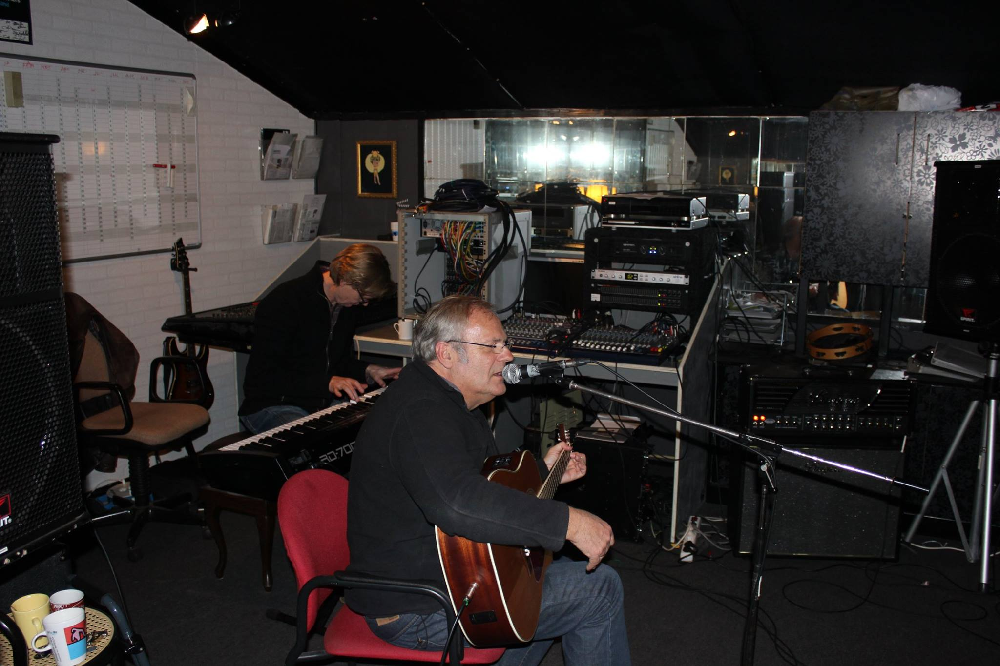
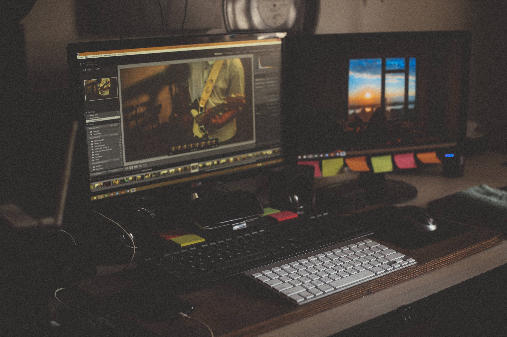

Bandstart

Rondje Studio
Ontdek wat de Bandstart Studio allemaal te bieden heeft
Café ‘TuneUp’
 Heb je even pauze tijdens de opnamen, dan kan je heerlijk vertoeven aan onze gezellige Bar van Café `TuneUp´. Overdag kan je onder het genot van een kopje koffie of thee en eventueel een versnapering lekker even ontspannen. In de avonduren kan men ook genieten van een hapje en een drankje. De bar is tevens te gebruiken wanneer er gebruik wordt gemaakt van het huren van de ruimte tijdens feesten.
De Lounge bar
 Een sfeervolle ruimte met een piano bar en gitarenbar om als muzikant of bezoeker even lekker te ontspannen of om in relaxe sfeer even wat muzikaal werk te bespreken. Ook hier staat een piano en kleine zanginstallatie.
De grote oefenruimte
 Deze oefenruimte is erg geliefd bij bands, vanwege het goede geluid en de sfeervolle inrichting. Ook de bekende bands repeteren hier graag. De ligging van onze studio is ook erg gunstig, zo vlakbij Veronica en andere radiostations.
De tweede oefenruimte
 Onze 2e oefenruimte is ook volledig ingericht. Daar staan zelfs twee drumstellen en bas installaties (dus ook geschikte lesruimte voor muziekdocenten).
De midi en beeldruimte
 In deze ruimte staat een apple computer en een midi keyboard. Hier kan men met final cut pro videoclips maken en met Ableton en Nexus creatief zijn met midi muziek maken (interessant voor Dj’s om hier samen te werken met muzikanten).